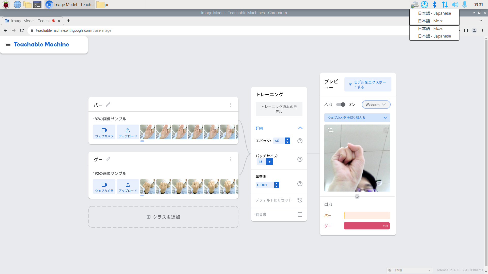
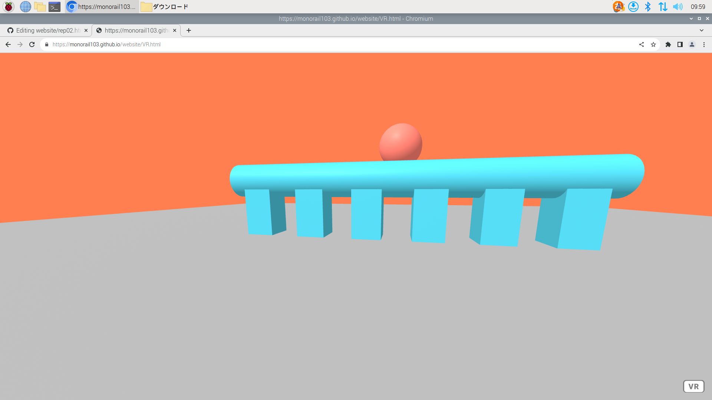

２週目のレポート ： 公大高専１年実習I-1
4組16番 拓杜
第2週目
2-2 機械学習体験

1.内容
Teachable Machineの画像学習機能を利用してグーとパーの画像をそれぞれ約200枚ずつ読み込み、Webカメラで読み込んだ手の画像がグーまたはパーかを判断した。
2.感想
機械学習の利用はコードを利用する他に方法がないと思っていたが、Webアプリの操作を行い画像を読み込ませるだけで利用できるので驚いた。また、このようなプログラミングの知識 を必要としないサービスの増加は、より便利なアプリ・ソフトウェアの制作に役立つと感じた。
2-3 JavaScript体験：３次元モデルのプログラムを作る

３次元モデル
1.内容
a-frameというjavascriptとhtmlでVR空間を作成できるサービスを利用し、立方体や円柱などのオブジェクトを自由に配置してオリジナルの空間を作った。
2.感想
html・javascriptという比較的使いやすい言語でVR空間を作ることができるため、驚いた